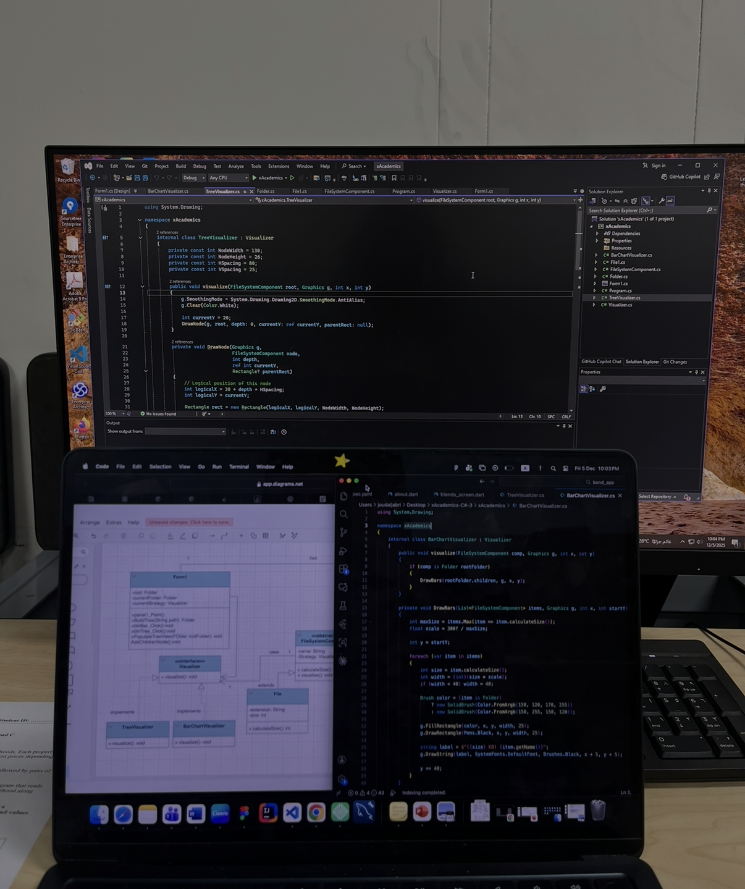
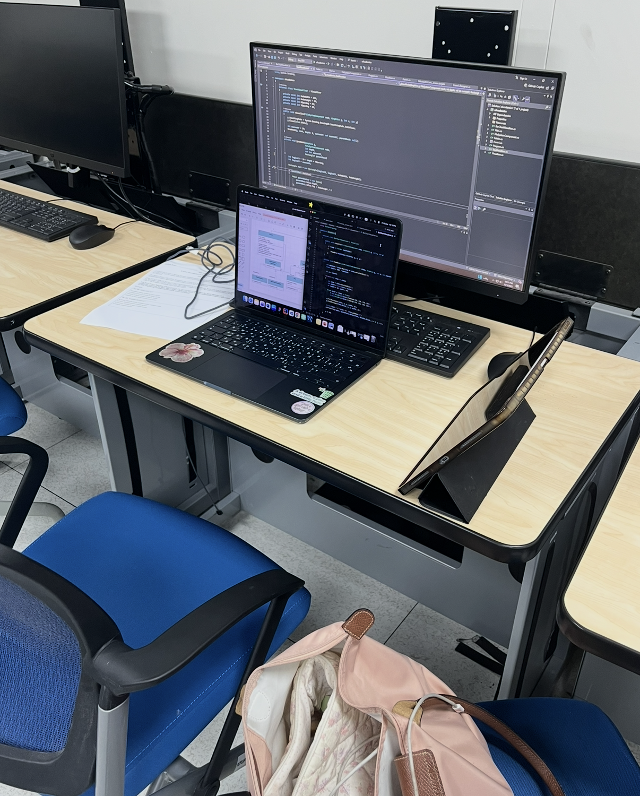

A C# application demonstrating the Composite Design Pattern — folders and files are treated uniformly, with two swappable visualization strategies for displaying the file tree.
The Folder Visualization Application is a C# project built for SWE316 as a focused demonstration of two classic design patterns working together: the Composite Pattern and the Strategy Pattern. The core idea is simple — a folder can contain files and other folders, and the application must be able to treat them identically when rendering.
Two visualization strategies are available: an indented tree view (similar to a file explorer) and a flat list view showing full paths. Switching between them requires no changes to the folder/file classes themselves.


A few moments while again working on software design course homeworks in our collage lab
The goal was to write code that would clearly illustrate why the Composite Pattern is useful — not by describing it in a comment, but by showing that adding a new component type to the tree requires no changes to the rendering logic. The second goal was to combine it with the Strategy Pattern to demonstrate how two patterns compose cleanly.
Both File and Folder implement the same Component interface. Folders maintain a list of children (which can be files or other folders), and the render operation recurses naturally through the tree without any instance of checks or type branching.
The first visualization strategy renders an indented, hierarchical tree — exactly like the left panel of a file explorer. Depth is tracked recursively and each level adds an indent level for clear visual nesting.
The second strategy renders all files as a flat list with their full paths. This is useful for quickly seeing all files in a folder tree without the hierarchy, similar to a recursive directory listing command.
The initial challenge was designing the IComponent interface so it could be shared by both leaves (files) and composites (folders) without forcing files to implement operations that only make sense for folders (like AddChild). The solution was to have default no-op implementations on the base class rather than forcing all implementors to provide them.
The Composite Pattern clicked into place once I saw it remove a conditional branch I'd previously needed: "if this is a folder, recurse; if it's a file, print." The whole point of the pattern is to make that check unnecessary. Once I rewrote it that way, the code became noticeably cleaner.
Combining two patterns in one project also showed me that patterns aren't mutually exclusive — they solve different axes of the same design problem and often fit together naturally.